1.1. Подключение к учебному серверу kubsu-dev.ru через клиент Putty при помощи хоста kubsu-dev.ru и порта 58528:
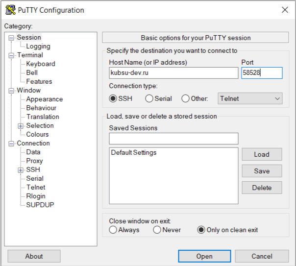
1.2. Ввод в Putty своих данных (логина и пароля):
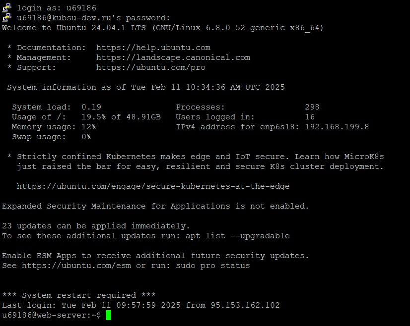
2. Использование утилиты ping, чтобы узнать IP-адрес веб-сервера kubsu.ru = 185.13.84.92:
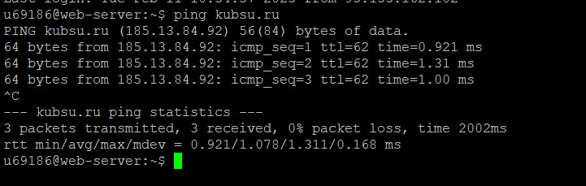
Горячие клавиши ctrl+c остановили поток пакетов при вызове функции.
Пинг, помимо адреса сервера, показывает также скорость, с которой сервер kubsu.ru отвечает на запрос с сервера kubsu-dev.ru,
откуда мы обращаемся к нему, при передаче пакетов. Например, 0.921 мс; 1.31 мс и т.д. Общее затраченное время на передачу 3 пакетов
составило 2002 мс, ни один пакет не был потерян в ходе передачи. Также статистика показывает максимальное и минимальное затраченное время
на траспортировку пакетов (max = 1.31 ms, min = 0.921 ms).
Пинг определяет связность между узлами сервера kubsu.ru и учебного сервера kubsu-dev.ru.
2. Использование команды nslookup, чтобы узнать A-записи и MX-записи домена kubsu.ru и kubsu-dev.ru
Команда nslookup вызвала только A-запись домена kubsu.ru = 185.13.94.92 и kubsu-dev.ru = 212.192.134.135. Ее также можно вызвать командой nslookup -type=a. A-запись (address record) указывает IP-адрес нужного нам доменного имени.
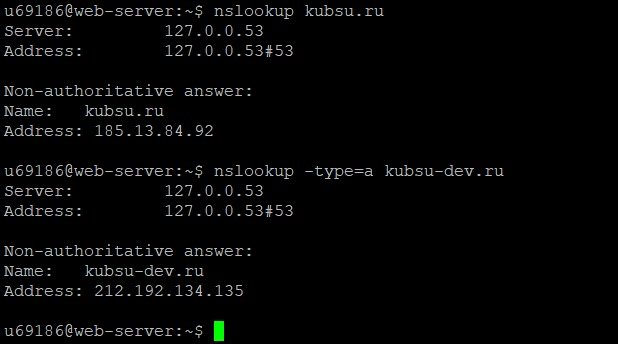
Mx-запись домена kubsu.ru и kubsu-dev.ru необходимо вызывать черех команду nslookup -type=mx.
MX-запись (mail exchange) определяет почтовый сервер, который будет обрабатывать электронную почту для конкретного домена.
На скрине заметим, что у домена Kubsu.ru есть 3 почтовых сервера (хоста, которые указывают на сервер со специальным ПО, обрабатывающие e-mail. Важно, чтобы для этих хостов были настроены А-записи с их IP-адресами) = mx.kubsu.ru, mx2.kubannet.ru, mx.kubannet.ru. Числа перед ними (50,10,20 соответственно) указывают на приоритетность, чем они ниже, тем более приоритетен почтовый сервер. В первую очередь почтовые серверы пытаются
доставить письмо на самый приоритетный адрес (mx2.kubannet.ru), если адрес переполнен или вышел из строя, письмо переправляется на следующие по приоритетности сервера (mx.kubannet.ru и mx.kubsu.ru).
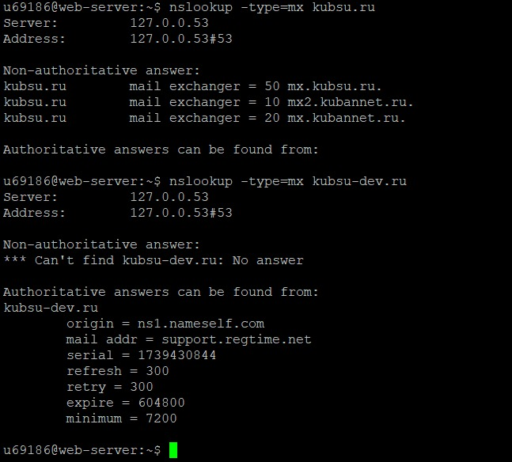
Как мы можем увидеть, при вызове Mx-записи домена kubsu-dev.ru происходит ошибка No answer. Скорее всего потому, что у домена нет электронной почты или из-за его приватности. Вместо этого выводится SOA-запись, содержащая административную информацию о зоне (имя сервера, адрес почты ответственных за администрирование этой зоны, серийный номер, интервал проверки наличия изменений, интервал прекращения ответа на запросы для этой зоны в случае
невозможности связаться с первичным сервером для обновления, минимальное время жизни для отрицательных ответов).
Утилита nslookup не ищет А-запись и Mx-запись непосредственно, а отправляет запрос на DNS сервера, которые уже производят поиск этих записей. Они являются авторитетными для двух доменов и управляются владельцами доменов или их провайдером хостинга. DNS-сервера тут же возвращает эти значения, если они есть в кэшэ, иначе производят рекурсивный поиск по всей иерархической структуре сервера (корневые серверы, локальные) и записывают ответ в кэш на определенный срок.
3. Использование команды whois, чтобы узнать дату регистрации домена kubsu.ru = 1998-03-28 и kubsu-dev.ru = 2020-02-12:
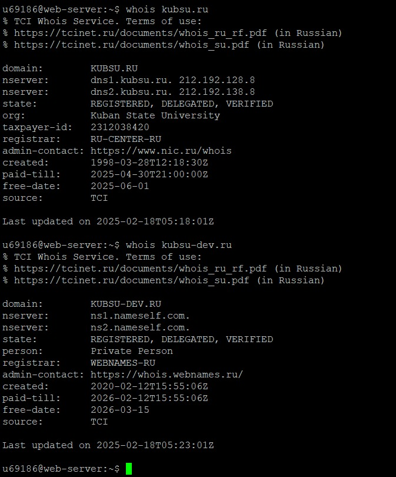
Помимо этого можно узнать приватность (kubsu-dev.ru), последнее обновление домена и его состояние (зарегистрирован, верифицирован, делегирован). Также содержатся данные о регистраторе (RU-CENTER-RU и WEBNAMES-RU), контактах админов, датах, до которых продлена оплата регистрации доменных имен (2025-04-30 и 2026-02-12) и датах удаления доменного имени при неуплате (2025-06-01 и 2026-03-15), TCI - источник информации о домене.
Регистраторы являются основным источником данных WHOIS.
Делегированный домен - это домен, который уже привязан к какому-то серверу или хостинг-провайдеру, который хранит о нем информацию и управляет.
4. Добавление сверстанной index.html страницы в git:
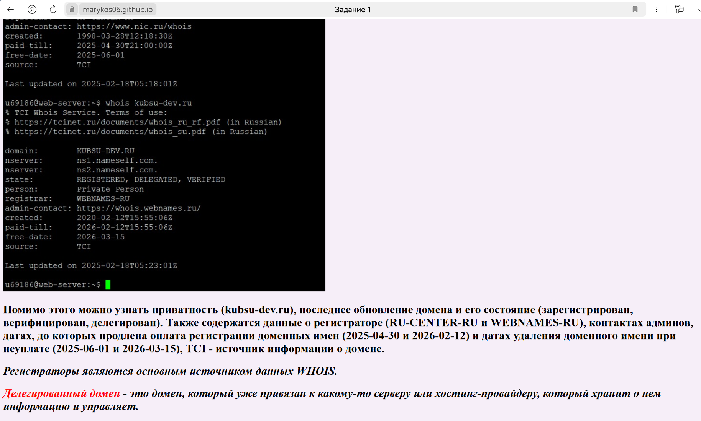
4.1. Клонирование репозитария в каталог www с помощью SSH:
4.1.1. С помощью команд ls и mc www обращаемся к текущему каталогу www и видим, что в нем ничего нет кроме двух файлов:
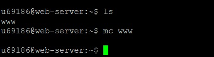
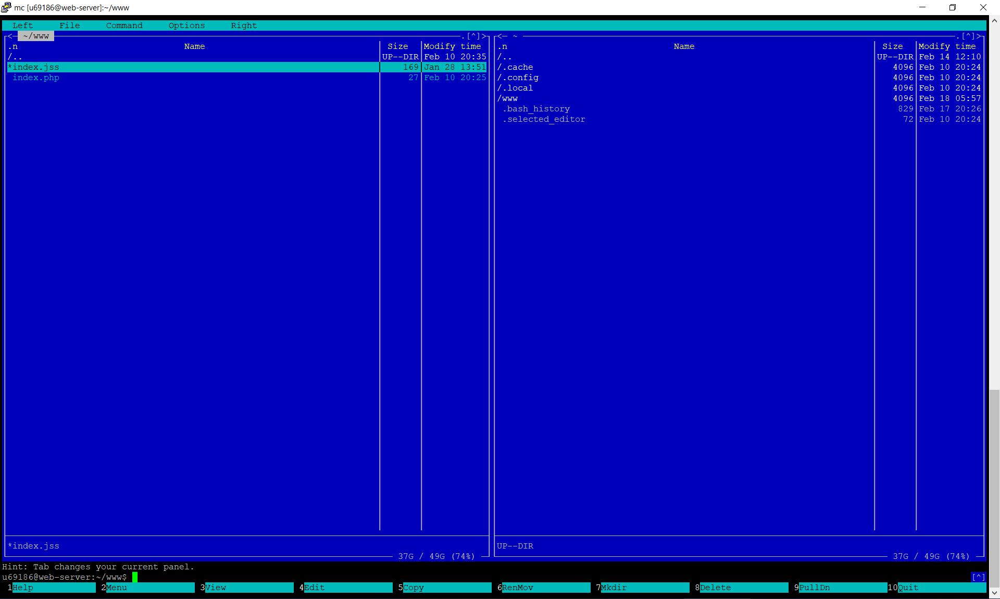
4.1.2. С помощью cd www выбираем текущий католог и командой git clone клонируем наш репозитарий в этот каталог:
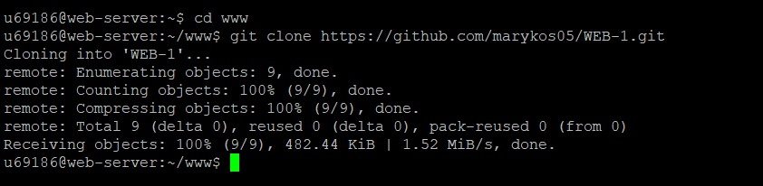
Теперь страница будет открываться по адресу http://u69186.kubsu-dev.ru/WEB-1/:
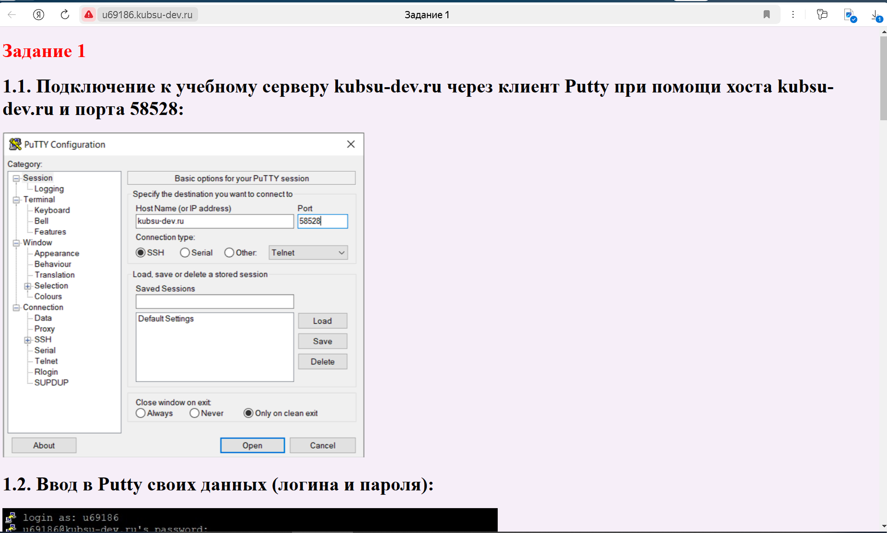
5.Подключение к учебному серверу с помощью программы FileZilla с логином и паролем по протоколу SFTP: